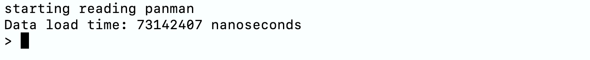

Exploring utilities in panmanUtils
Here, we will learn to use exploit various functionalities provided in panmanUtils software for downstream applications in epidemiological, microbiological, metagenomic, ecological, and evolutionary studies.
Step 0: The Steps below require panmanUtils and a PanMAN. We provide a pre-built panman (sars_20.panman), othewise, refer to installation guide to install panmanUtils and construction instructions to build a PanMAN.
Functionalities in panmanUtils
All panmanUtils functionality commands manipulate the input PanMAN file.
| Option | Description |
|---|---|
-I, --input-panman |
Input PanMAN file path |
-s, --summary |
Print PanMAN summary |
-t, --newick |
Print Newick string of all trees in a PanMAN |
-f, --fasta |
Print tip/internal sequences (FASTA format) |
-m, --fasta-aligned |
Print MSA of sequences for each PanMAT in a PanMAN (FASTA format) |
-b, --subnet |
Extract subnet of given PanMAN to a new PanMAN file based on the list of nodes provided in the input file |
-v, --vcf |
Print variations of all sequences from any PanMAT in a PanMAN (VCF format) |
-g, --gfa |
Convert any PanMAT in a PanMAN to a GFA file |
-w, --maf |
Print m-WGA for each PanMAT in a PanMAN (MAF format) |
-a, --annotate |
Annotate nodes of the input PanMAN based on the list provided in the input file |
-r, --reroot |
Reroot a PanMAT in a PanMAN based on the input sequence id (--reference) |
-v, --aa-translation |
Extract amino acid translations in tsv file |
-e, --extended-newick |
Print PanMAN's network in extended-newick format |
-k, --create-network |
Create PanMAN with network of trees from single or multiple PanMAN files |
-p, --printMutations |
Create PanMAN with network of trees from single or multiple PanMAN files |
-q, --acr |
ACR method [fitch(default), mppa] |
-n, --reference |
Identifier of reference sequence for PanMAN construction (optional), VCF extract (required), or reroot (required) |
-s, --start |
Start coordinate of protein translation |
-e, --end |
End coordinate of protein translation |
-d, --treeID |
Tree ID, required for --vcf |
-i, --input-file |
Path to the input file, required for --subnet, --annotate, and --create-network |
-o, --output-file |
Prefix of the output file name |
Important: When output-file argument is optional and is not provided to panmanUtils, the output will be printed in the terminal.
Note
For all the examples below, sars_20.panman will be used as input panman. Alternatively, users can provide custom build panman using the instructions provided here.
Summary extract
The summary feature extracts node and tree level statistics of a PanMAN, that contains a summary of its geometric and parsimony information.
- Usage Syntax
- Example
Newick extract
Extract Newick string of all trees in a PanMAN.
- Usage syntax
- Example
Extended Newick extract
Extract network in Extended Newick format.
- Usage syntax
- Example
Tip/internal node sequences extract
Extract tip and internal node sequences from a PanMAN in a FASTA format.
- Usage syntax
- Example
Multiple Sequence Alignment (MSA) extract
Extract MSA of sequences for each PanMAT (with pseduo-root coordinates) in a PanMAN in a FASTA format.
- Usage syntax
- Example
Multiple Whole Genome Alignment (m-WGA) extract
Extract m-WGA for each PanMAT in a PanMAN in the form of a UCSC multiple alignment format (MAF).
- Usage syntax
- Example
Variant Call Format (VCF) extract
Extract variations of all sequences from any PanMAT in a PanMAN in the form of a VCF file with respect to any reference sequence (ref) in the PanMAT.
- Usage syntax
- Example
Graphical fragment assembly (GFA) extract
Convert any PanMAT in a PanMAN to a Graphical fragment assembly (GFA) file representing the pangenome.
- Usage syntax
- Example
Subnetwork extract
Extract a subnetwork from a given PanMAN and write it to a new PanMAN file based on the list of nodes provided in the input-file.
- Usage syntax
- Example
Annotate
Annotate nodes in a PanMAN with a custom string, later searched by these annotations, using an input TSV file containing a list of nodes and their corresponding custom annotations.
- Usage syntax
- Example
cd $PANMAN_HOME/build ./panmanUtils -I panman/sars_20.panman --annotate --input-file=annotations.tsv --output-file=ecoli_10_annotateNOTE: If output-file is not provided to panmanUtils, the annotated PanMAN will be written to the same file.
Amino Acid Translation
Extract amino acid translations from a PanMAN in TSV file.
- Usage syntax
- Example
panmanUtils Interactive mode
Step 1: Users can enter panmanUtils's interactive mode by passing input panman as input using the following command:
Note
The interactive mode should look like the image attached below

Step 2: Use the commands listed in Table 1 to perform desired operation